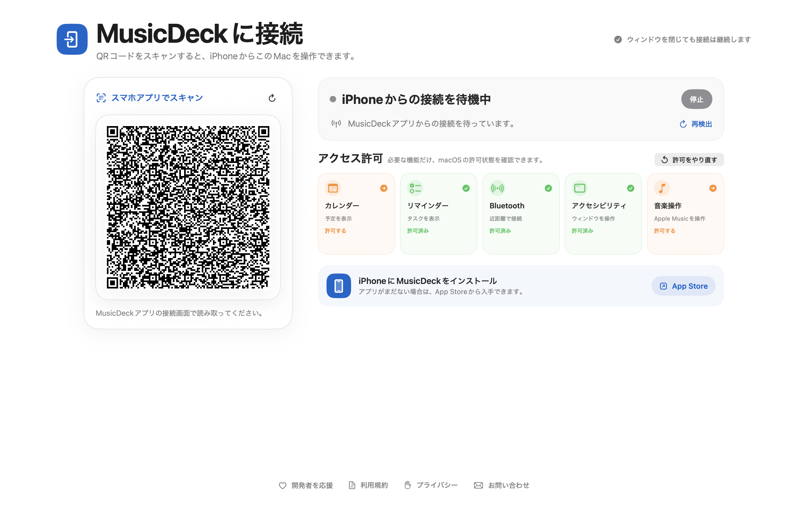
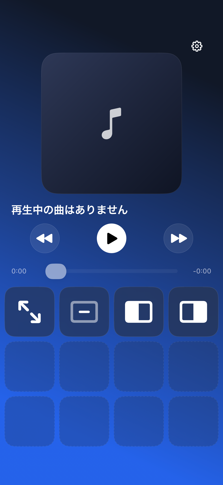

01
すぐつながる。
すぐ使える。
QRコードを読むだけでMacとペアリング。次回からは前回のMacへすばやく再接続できます。
MUSIC & MAC REMOTE
再生操作・アプリ起動・ウィンドウ整理をiPhoneからまとめて行える、
シンプルで美しいMac用リモートデッキです。


REAL APP.
REAL CONTROL.
WHAT YOU CAN DO
01
QRコードを読むだけでMacとペアリング。次回からは前回のMacへすばやく再接続できます。
02
曲名・アーティスト・アルバム・ジャケットをリアルタイム表示。再生、曲送り、シークも直感的です。
03
よく使うアプリを最大8個までワンタップ起動。全画面・最小化・左右半分表示もまとめて実行できます。
GET STARTED
3つのステップで、iPhoneがMacのための操作デッキになります。
iPhoneにMusicDeck Lite、MacにMusicDeck for Macを入れます。
Macに表示されたQRコードをiPhoneで読み取り、ペアリングします。
音楽の再生からアプリ起動、ウィンドウ整理まで、すぐに始められます。
LITTLE TIPS
縦持ち・横持ちのどちらでも、音楽と操作に集中できる固定デッキUIです。
標準・単色・ジャケットぼかし・ジャケット由来のカラーから背景を選べます。
接続情報は端末のKeychainで管理。基本はMacとiPhone間のローカル直接通信で、広告・解析SDKはありません。
DOWNLOAD
iPhoneとMacにアプリを入れて、いつもの操作をもっと軽やかに。
iPhoneからMacを操作するためのコンパニオンアプリ。
音楽とMac操作をまとめる、iPhone用リモートデッキ。
無料でダウンロードできます。対応OSは各ストアの製品ページをご確認ください。